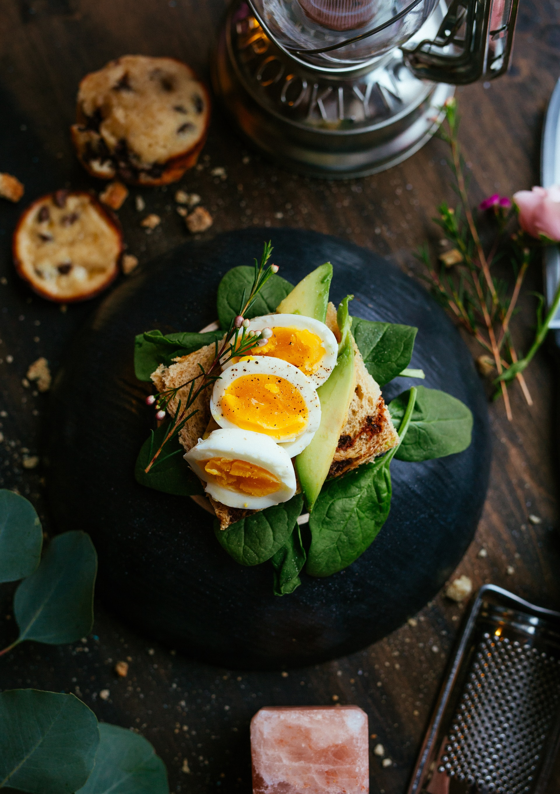
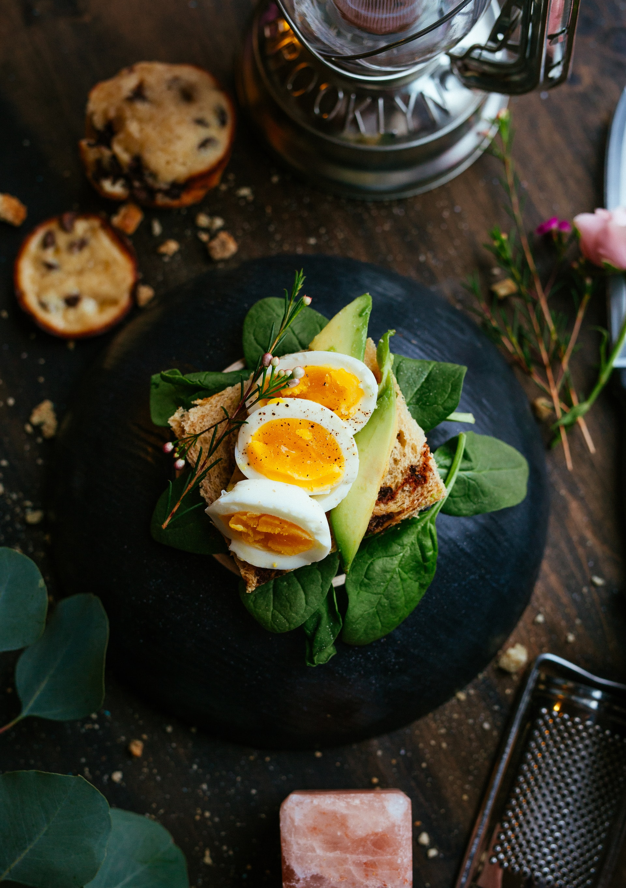

Nikmati makanan - makanan berkualitas yang kami sajikan, makanan enak dimasak oleh koki - koki profesional dijamin enak dan mantap. Tidak perlu khawatir tentang harga, karena SAKU.co didirikan untuk melayani mahasiswa UPNVJ, maka dari itu makanan yang kami buat untuk anda kami jual dengan harga yang ramah dan bersahabat dengan dompet anda.
SAKU.co menyediakan layanan yang mudah, dimana anda tidak perlu mengantre saat memesan. Cukup buat akun dan login, kemudian pilih menu yang ingin anda pesan, pesanan akan diproses secepat mungkin dan akan terdapat notifikasi pemberitahuan jika pesanan anda sudah jadi. metode pembayaran bisa dilakukan ditempat ataupun menggunakan metode pembayaran cashless lainya.


 
